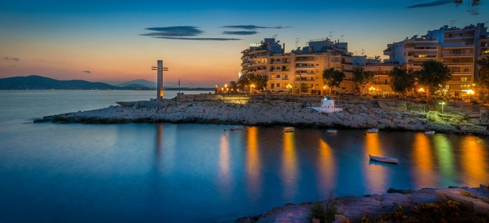

Η Πειραϊκή Χερσόνησος στην αρχαιότητα ονομαζόταν από τους Αθηναίους Ακτή και ήταν φημισμένη για τα πλούσια μεταλλεία της, εξαγόταν ο "Ακτίτη λίθος" ο οποίος χρησιμοποιήθηκε σαν υλικό κατασκευής στα Μακρά τείχη και σε όλα τα λιμενικά έργα του αρχαίου Πειραιά. Τα χρόνια της κλασσικής αρχαιότητας ήταν έντονα πυκνοκατοικημένη υπήρχαν και πολλές δεξαμενές συλλογής βρόχινου νερού για την ύδρευση των κατοίκων. Συνορεύει στα βόρεια με την Καλλίπολη, στα ανατολικά με τον Άγιο Βασίλειο, στα δυτικά και νότια βρέχεται σε ένα τεράστιο μήκος από τον Σαρωνικό κόλπο δημιουργώντας την Πειραϊκή ακτή επί της Ακτής Θεμιστοκλέους. Η Πειραϊκή προσφέρει την δυνατότητα για βόλτα στο ηλιοβασίλεμα αλλά και παλιές και νέες γευστικές εμπειρίες. Την τιμητική τους έχουν τα ουζερί και οι παραδοσιακές ταβέρνες που προσφέρουν κυρίως θαλασσινά. Εσωτερικοί μετανάστες οι περισσότεροι ιδιοκτήτες έφεραν στην Πειραϊκή τις γεύσεις και τις μυρωδιές του τόπου τους. Παραδοσιακά πιάτα από τις Κυκλάδες, τα Δωδεκάνησα και την Κρήτη κάνουν την βόλτα του επισκέπτη μια ανεπανάληπτη γευστική εμπειρία.
